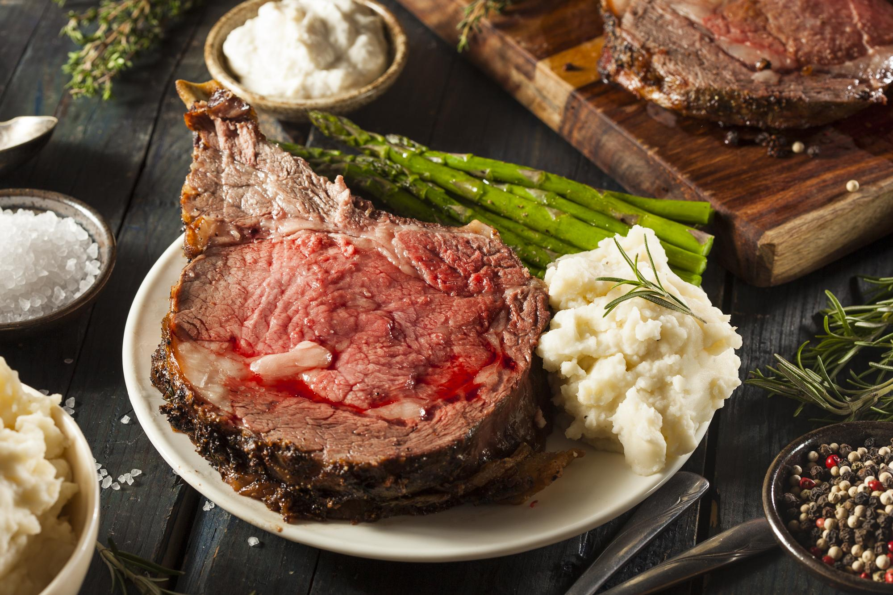

Bacon Wrapped Prime Rib

Bacon-wrapped prime rib offers a harmonious combination of two beloved
meats, each bringing its unique attributes to the table. Prime rib, known
for its tenderness and marbling, is revered for its rich, beefy flavor.
The addition of bacon amplifies the taste profile, infusing the meat with
smoky, salty notes and creating a delectable contrast of textures. As the
bacon cooks, its fat renders, basting the prime rib from within and
ensuring a moist and juicy result.
Ingredients
- 5lb (2kg) boneless ribeye roast with the fat trimmed
- kosher salt, to taste
- coarse black pepper, to taste
- 1 cup (225g) butter, softened
- 2 tablespoons olive oil
- 7 cloves garlic, minced
- 1 tablespoon paprika
- 1 tablespoon onion powder
- 1/4 cup (10g) chives, chopped
- 1/4 cup (10g) fresh rosemary, chopped
- 1/2 cupt (110g) brown sugar
- 3lb (1kg) bacon
- 1/4 cup (30g) flour
- 2 cups (480ml) beef broth or stock
Steps
- Preheat the oven to 250F (120C).
- Warm the Prime Rib roast to room temperature.
- Place the roast on a greased wire rack set over a baking sheet.
-
Rub the roast with olive oil and season well with coarse salt and
pepper.
-
Roast the Prime Rib for 3 hours, or until the internal temperature
reaches at least 125F (52C) for medium-rare cooked prime rib. 115-120
for rare.
- All the roast to cool to room temperature.
- Increase the oven temperature to 450F (230C).
-
Mix together the butter, garlic, paprika, onion powder, chives,
rosemary, brown sugar, salt, and pepper in a medium bowl.
- Rub the butter mixture on the Prime Rib roast.
-
On a large piece of parchment paper or plastic wrap, weave together
bacon strips until you have a bacon latice about twice as long and twice
as wide as the roast.
-
Place the bacon lattice over the roast and tuck any excess bacon around
the prime rib.
-
Return the bacon-wrapped roast to a greased wire rack set over a baking
sheet.
- Roast the Prime Rib for 30 minutes, or until the bacon is crispy.
- Remove the roast from the pan and let rest on a cutting board.
- Pour the pan drippings into a medium saucepan over medium heat.
-
Add the flour, whisking until there are no lumps and the mixture starts
to simmer.
- Add the beef broth and stir until the gravy comes to a boil.
-
Remove the pan from the heat and strain the sauce into a gravy dish.
-
Carve the prime rib into 3/4-inches slices, the serve with the gravy.